4.5 Constructions
- Copy a segment and copy an angle
- Construct a perpendicular bisector and an angle bisector
- Construct a perpendicular line and a parallel line through a point
- Construct an equilateral triangle and a regular hexagon
- Explain why a construction works
Warm-Up
1. 3 inches
2. 37°
3. SSS
4.5.1Copy a Segment and Copy an Angle
- A construction uses only a compass (draws arcs and circles) and a straightedge (draws straight lines). Keep your arcs. They show your work.
- Copy a segment AB onto a ray from C. Step 1: Set the compass width to the length of AB.
- Step 2: Put the compass point on C. Draw an arc across the ray. Label the point D. Now CD = AB.
- Why it works: CD and AB are both the same compass width.
- Copy an angle ∠A onto a ray from D. Step 1: Put the compass point on A. Draw an arc across both sides. Label the points P and Q.
- Step 2: Keep the same width. Put the point on D. Draw an arc across the ray. Label the point R.
- Step 3: Set the compass to the length PQ. Put the point on R. Draw an arc that crosses the other arc at S.
- Step 4: Draw ray DS. Now ∠SDR ≅ ∠A.
- Why it works: AP = DR, AQ = DS, and PQ = RS (equal compass widths). So △ APQ ≅ △ DRS by SSS.
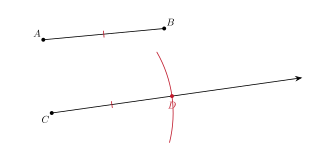
Copy AB onto the ray from C. Label the new segment CD.
Why does CD = AB?
Same compass width
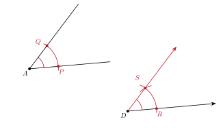
Copy ∠A onto the ray from D.
Which rule shows △ APQ ≅ △ DRS?
SSS
4.5.2Perpendicular Bisector and Midpoint
- Step 1: Set the compass wider than half of AB. Put the point on A. Draw an arc above and below AB.
- Step 2: Keep the same width. Put the point on B. Draw arcs that cross the first arcs at P and Q.
- Step 3: Draw line PQ. It crosses AB at the midpoint M. Line PQ is the perpendicular bisector of AB.
- Why it works: AP = BP and AQ = BQ (equal compass widths). Also PQ = PQ. So △ APQ ≅ △ BPQ by SSS.
- Then ∠APM ≅ ∠BPM. With AP = BP and PM = PM, △ APM ≅ △ BPM by SAS. So AM = BM and the two angles at M are equal. Equal angles on a straight line are each 90°.
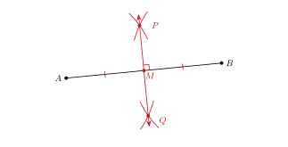
Construct the perpendicular bisector of AB. Label the midpoint M.
Name two equal segments you constructed.
AM and MB
4.5.3Bisect an Angle
- Step 1: Put the compass point on the vertex A. Draw an arc across both sides. Label the points P and Q.
- Step 2: Put the point on P. Draw an arc inside the angle. Keep the same width. Put the point on Q and draw an arc that crosses the first arc at R.
- Step 3: Draw ray AR. It is the angle bisector. ∠PAR ≅ ∠QAR.
- Why it works: AP = AQ and PR = QR (equal compass widths). Also AR = AR. So △ APR ≅ △ AQR by SSS. The matching angles ∠PAR and ∠QAR are equal.
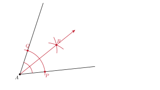
Bisect ∠A.
If m∠A = 66°, how large is each new angle?
33°
4.5.4Perpendicular and Parallel Lines Through a Point
- Perpendicular from P to line ℓ. Step 1: Put the point on P. Draw an arc that crosses ℓ twice, at A and B.
- Step 2: Put the point on A, then on B, with the same width. Draw arcs that cross below ℓ at Q.
- Step 3: Draw line PQ. It is perpendicular to ℓ.
- Why it works: PA = PB and QA = QB. So PQ is the perpendicular bisector of AB.
- Parallel to ℓ through P. Step 1: Draw a line through P that crosses ℓ at A. Step 2: Copy the angle at A to P, using the same four steps as before.
- Why it works: the two angles are corresponding angles and they are congruent. So the lines are parallel (1.4).
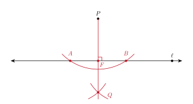
Construct the line through P that is perpendicular to ℓ. Label the foot F.
What is m∠PFA?
90°
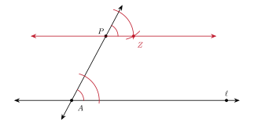
Construct the line through P that is parallel to ℓ.
Which angles did you copy?
corresponding angles
4.5.5Equilateral Triangle and Regular Hexagon
- Equilateral triangle on AB. Step 1: Set the compass width to AB. Draw an arc from A and an arc from B. They cross at C.
- Step 2: Draw AC and BC. Why it works: AC = AB and BC = AB (the same compass width). All three sides are equal, and each angle is 60°.
- Regular hexagon. Step 1: Draw a circle with center O. Do not change the compass width. Put the point on a point 1 on the circle. Mark point 2.
- Step 2: Move the point to 2 and mark 3. Keep going until you have 6 points. Draw the six sides.
- Why it works: each side equals the radius, so each triangle with O is equilateral. Each center angle is 60°, and 6 · 60° = 360°.

Construct an equilateral triangle on AB.
How long is each side if AB = 4.6?
4.6
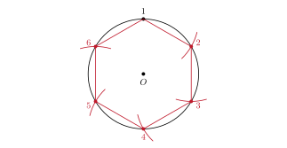
Construct a regular hexagon in the circle. Start at point 1.
If the radius is 2.2, how long is each side?
2.2
1. A construction uses only a compass and a straightedge.
2. Equal compass widths give equal lengths. This is why constructions work.
3. The perpendicular bisector and the angle bisector both use SSS to show they work.
4. An equilateral triangle has three equal sides. A regular hexagon has sides equal to the radius.
Practice
Copy a segment.
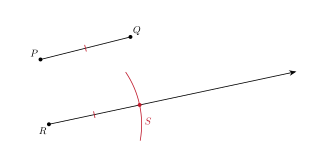
1. Copy PQ onto the ray from R. Label the new segment RS.
RS = PQ
Copy an angle.
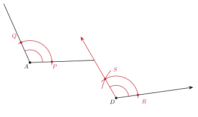
2. Copy ∠A onto the ray from D.
The new angle is congruent to ∠A.
Construct a perpendicular bisector.
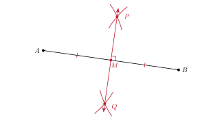
3. Construct the perpendicular bisector of AB.
The line meets AB at its midpoint.
Bisect an angle.
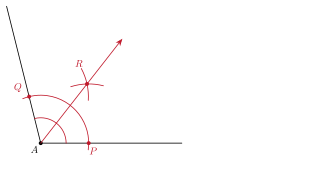
4. Bisect ∠A.
Each new angle is half of m∠A.
Bisect a right angle.
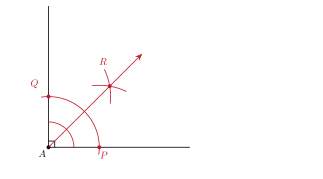
5. Bisect the right angle. What is the measure of each new angle?
45°
Construct a perpendicular line.
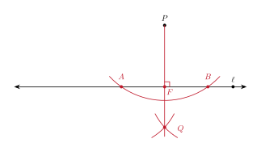
6. Construct the line through P perpendicular to ℓ.
The line meets ℓ at 90°.
Construct a parallel line.
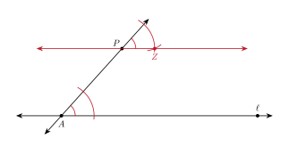
7. Construct the line through P parallel to ℓ. Copy the angle at A.
The new line is parallel to ℓ.
Construct an equilateral triangle.
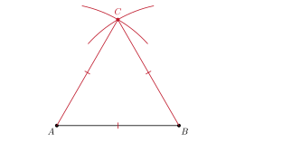
8. Construct an equilateral triangle on AB.
All three sides equal AB.
Construct a regular hexagon.
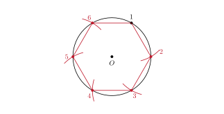
9. Construct a regular hexagon in the circle. Start at point 1.
Each side equals the radius.
Double a segment.
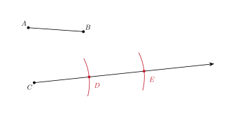
10. Construct CE so that CE = 2 · AB. Use the ray from C.
Copy AB twice in a row: CD = DE = AB.
Why does it work?.
11. In the angle bisector construction, which rule shows △ APR ≅ △ AQR? Which angles are then congruent?
SSS. ∠PAR ≅ ∠QAR.
12. In the copy-an-angle construction, name the three pairs of congruent sides in △ APQ and △ DRS.
AP ≅ DR, AQ ≅ DS, and PQ ≅ RS. Each pair is the same compass width.
13. Diego sets the compass narrower than half of AB for the perpendicular bisector. What goes wrong?
The arcs from A and B do not cross, so he cannot find P and Q.
Use the numbers.
14. An equilateral triangle is built on a segment 6 cm long. Find the perimeter and each angle.
Perimeter: 3 · 6 = 18 cm. Each angle: 60°.
15. A regular hexagon is built in a circle with radius 5 cm. Find the side length and the perimeter.
Each side is 5 cm. The perimeter is 6 · 5 = 30 cm.
16. A(1, 1) and B(7, 5). The perpendicular bisector of AB passes through P(6, 0). Show that PA = PB.
PA = 52 + 12 = 26 and PB = 12 + 52 = 26. They are equal. The midpoint is M(4, 3). The slope of PM is −32 and the slope of AB is 23. The product is −1.
17. Mohammed bisects a 74° angle. Then he bisects one of the new angles. Find the size of the smaller angles.
74 ÷ 2 = 37°. Then 37 ÷ 2 = 18.5°.
Test Practice
A. The triangles are congruent by SSS, so the matching angles are equal. ← correct
B. The arcs are parallel, so the angles are equal.
C. The triangles have the same area, so the angles are equal.
D. The compass measures the angle in degrees.
A. PA = PB ← correct
B. PA = AB
C. m∠APB = 90°
D. P is the midpoint of AB
Challenge
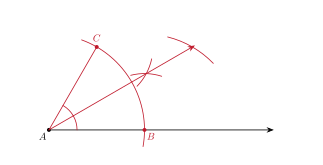
The ray AB is the first side. Arcs make a 60° angle at A. Bisecting it gives 30°.
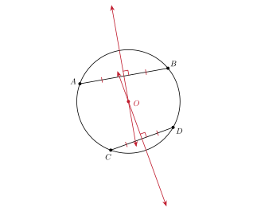
Bisect chords AB and CD. The two bisectors cross at the center O.